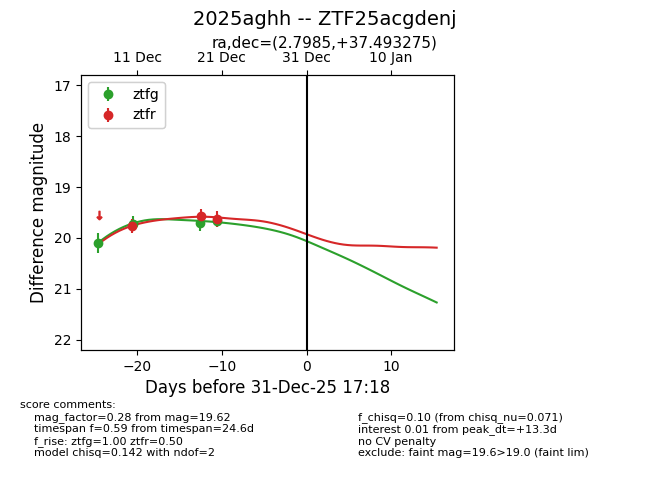
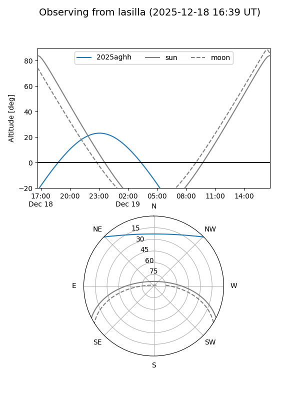
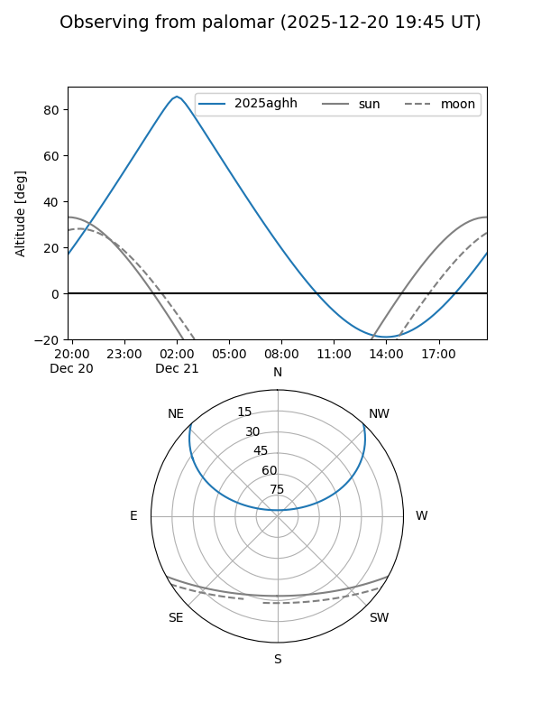
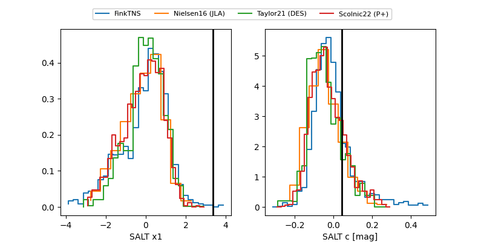

2025aghh
Target 2025aghh at 2025-12-31 18:00
Aliases and brokers:
FINK: link
Lasair: link
ALeRCE: link
TNS: link
YSE: link
alt names
ZTF25acgdenj (ztf,fink_ztf)
2025aghh (tns,yse)
Coordinates:
equatorial (ra, dec) = 2.7985,+37.49327
equatorial (HMS+DMS) = 00:11:11.64,+37:29:35.79
galactic (l, b) = (114.1568,-24.69180)
Flags:
Photometry:
last ztfg=19.66, ztfr=19.62
4 ztfg, 3 ztfr detections
Lightcurve

Visibility


Additional plots
